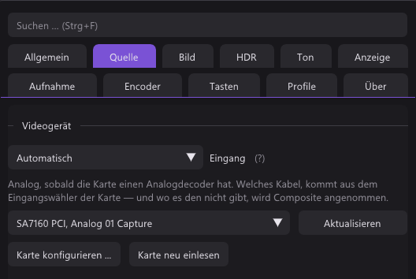
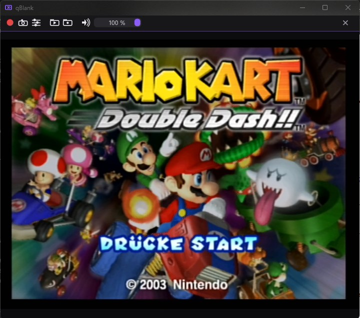
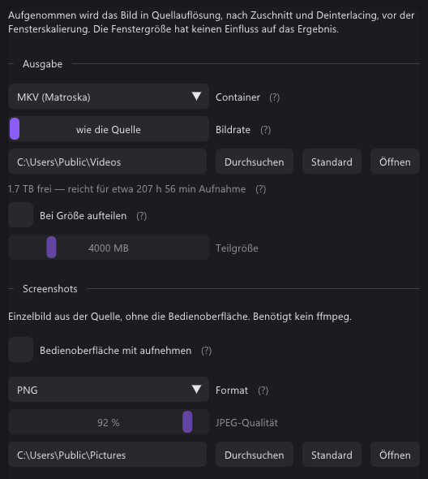
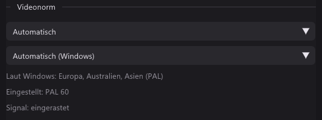
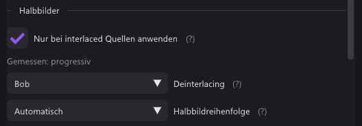
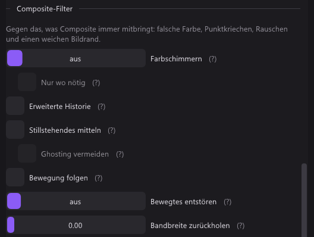
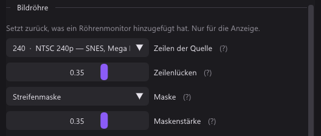
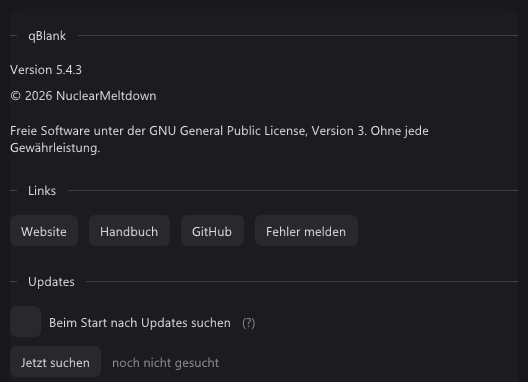

Installation
qBlank ist eine einzige Datei. Lade qBlank.exe aus der neuesten Version und leg sie in einen eigenen Ordner, in den du schreiben darfst — die Einstellungen liegen daneben in qBlank.json. Es gibt keinen Installer, und nichts landet in der Registry, außer der virtuellen Kamera, wenn du sie installierst.
- Windows 10 oder neuer und ein DirectShow-Aufnahmegerät: fast jede Karte, auch per USB.
- Warnt SmartScreen vor einem unbekannten Herausgeber, wähle Weitere Informationen, dann Trotzdem ausführen.
- Das Release enthält auch
CapView.exe. Sie ist nur zum Umzug einer alten CapView-Installation da; neu brauchst du nurqBlank.exe. - Zum Entfernen den Ordner löschen. Vorher die virtuelle Kamera deinstallieren, falls installiert.
Erster Start
Beim ersten Start erscheint ein Willkommensbild mit der Taste für die Einstellungen, F2. Danach öffnet qBlank die Einstellungen von selbst, solange kein Gerät gewählt ist.
- Quelle → Videogerät: deine Karte wählen. Das Bild erscheint sofort.
- Quelle → Eingang der Karte: nur bei Karten mit mehreren Eingängen, etwa HDMI und Composite.
- Quelle → Ton der Quelle: der Ton der Karte oder jedes Windows-Aufnahmegerät.
- Quelle → Format: auf Automatisch lassen, außer du willst eine bestimmte Auflösung oder Bildrate.

Eine Karte kann immer nur ein Programm halten. Bleibt das Bild schwarz, schließ OBS oder jedes andere Programm, das die Karte nutzt.
Das Fenster
- Doppelklick oder Eingabe schaltet Vollbild um, Esc verlässt es.
- Rechtsklick öffnet das Menü: Einstellungen, Vollbild, Fenstergröße (1×, 2×, 3× die Quelle), Immer im Vordergrund, Rahmenlos, Statistik, Werkzeugleiste, Videonorm, Farbe, Stumm, Profil, Aufnahme, Screenshots, Standbild und Filter vergleichen.
- Mausrad ändert die Lautstärke.
- Umschalt beim Ziehen am Rand hält die Form des Bildes.
- Im rahmenlosen Fenster das Bild ziehen, um das Fenster zu verschieben. Snap und der Taskleistenknopf bleiben.
- F1 zeigt die Statistik: Quellformat, gemessene Bildrate und die Zeit, die ein Bild in qBlank verbringt.

Tasten
Das sind die Vorgaben. Alle lassen sich unter Einstellungen → Tasten ändern.
| Taste | Aktion |
|---|---|
| Eingabe | Vollbild |
| F1 | Statistik |
| F2 | Einstellungen |
| F5 | Aufnahme neu starten |
| Umschalt+F5 | Karte neu einlesen |
| F6 | Wertebereich neu messen |
| F7 | Videonorm suchen |
| F8 | Rand suchen |
| F9 | Aufnahme starten/stoppen |
| F10 | Screenshot |
| Strg+F10 | Screenshot in die Zwischenablage |
| F11 | Standbild |
| F12 | Filter vergleichen |
| Umschalt+F12 | Alle Filter aus |
| M | Stumm |
| + / - | Lauter / Leiser |
Feste Tasten: Esc verlässt das Vollbild oder schließt die Einstellungen, Strg+1…9 wechselt das Profil, Strg+F durchsucht die Einstellungen.
„Aufnahme neu starten“ meint hier das Einlesen von der Karte, nicht die Videoaufnahme.
Einstellungen
Jede Änderung wirkt ab dem nächsten Bild. Strg+F findet jede Einstellung, auch unter den Namen anderer Programme. Ein Rechtsklick auf einen Regler setzt ihn auf den Standard zurück. Reiter, die ein Gerät brauchen, erscheinen erst, wenn eines gewählt ist, und Regler, die für die Quelle nicht gelten, fehlen.
| Reiter | Was drin ist |
|---|---|
| Allgemein | Sprache, Fenster, Darstellung, Symbol im Infobereich, Verknüpfungen im Startmenü und auf dem Desktop, Protokoll |
| Quelle | Videogerät, Videonorm, Eingang der Karte, Ton der Quelle, Format |
| Bild | Skalierung, Bildregler, Halbbilder (Deinterlacing), Bildrand abschneiden, natives Pixelraster, Composite-Filter oder Rauschen, Bildröhre, Vergleich, Farbe |
| HDR | Hoher Kontrastumfang: Tone Mapping oder Durchreichen, und was den Umfang in Screenshots und Aufnahmen behält |
| Ton | Wiedergabegerät, Verzögerung, Lautstärke, Mikrofon |
| Anzeige | Grafik (Direct3D 11 oder Vulkan), VSync und Verhalten, Lautstärke-Anzeige, Vollbild |
| Aufnahme | Ausgabeordner und Format, Screenshots, virtuelle Kamera, nach MP4 umpacken |
| Encoder | Encoder, ffmpeg, Encoder-Einstellungen |
| Tasten | Alle Tasten von oben, frei belegbar, mit Alle zurücksetzen |
| Profile | Profile und ihre automatische Wahl |
| Über | Version, Copyright, Lizenz, Links und die Update-Suche |
Das Einstellungsfenster läuft auf einem eigenen Grafikgerät und kann so auf einem zweiten Bildschirm liegen, während du auf dem ersten spielst.
Aufnahme, Screenshots, virtuelle Kamera
Aufnahme
- Aufnehmen braucht ffmpeg. Encoder → ffmpeg herunterladen holt es und hält es aktuell.
- Den Encoder im Reiter Encoder wählen: NVENC, Quick Sync, AMF, x264 oder x265, mit H.264, H.265 oder AV1.
- F9 startet und stoppt. Ein roter Punkt auf dem Taskleistenknopf zeigt, dass aufgenommen wird.
- Der Reiter Aufnahme zeigt den freien Platz als Aufnahmezeit. Eine Aufnahme stoppt selbst, bevor das Laufwerk voll ist.
- Ein Mikrofon kann auf eine eigene Spur: Ton → Mikrofon.
- Nach MP4 umpacken macht fertige Aufnahmen zu MP4, ohne sie neu zu kodieren.
Screenshots
- F10 speichert in Quellauflösung, Strg+F10 kopiert in die Zwischenablage.
- PNG, JPEG und JPEG XR brauchen nichts weiter. AVIF braucht ffmpeg.
- Bedienoberfläche mit aufnehmen im Reiter Aufnahme nimmt stattdessen das fertige Fenster auf.

Virtuelle Kamera
Aufnahme → Virtuelle Kamera → Kamera installieren fragt einmal nach Administratorrechten. Danach können OBS, Discord oder ein Browser qBlank als Kamera wählen. Deinstalliert wird sie an derselben Stelle.
Analoge Konsolen
Videonorm
Quelle → Videonorm auf Automatisch findet PAL, NTSC oder SECAM selbst und folgt einer Konsole, die zwischen 50 und 60 Hz wechselt. Nicht ändern lässt, was der Treiber der Karte eingestellt hat. Stimmt die Farbe nicht, drück F7: Es prüft am aktuellen Bild neu und sagt, was es gefunden hat.

Deinterlacing
Bild → Halbbilder. Mit Nur bei interlaced Quellen anwenden läuft der Deinterlacer nur, wenn das Bild als interlaced gemessen wird, und kann so für 240p-Konsolen anbleiben.

| Modus | Was er tut |
|---|---|
| Aus (Weave) | Halbbilder bleiben verwoben. Kammartefakte bei Bewegung. |
| Bob | Ideal für 240p/288p, bei echtem Interlacing am unruhigsten. |
| Bob (interpoliert) | Wie Bob, fehlende Zeilen interpoliert. Deutlich ruhiger. |
| Bewegungsadaptiv | Ruhige Teile behalten jede Zeile, bewegte werden interpoliert. |
| Kantenorientiert | Für Pixelgrafik: glatte Diagonalen. Auf Composite schwächer. |
| YADIF | Beste Qualität, etwas mehr GPU-Last. |
Springt das Bild auf und ab, die Halbbildreihenfolge umstellen.
Composite-Filter
Bild → Composite-Filter erscheint nur an einem Composite-Eingang.
- Erweiterte Historie entfernt Dot Crawl auch dort, wo sich etwas bewegt oder überblendet. Standardmäßig aus.
- Stillstehendes mitteln hebt Dot Crawl in ruhigen Bildteilen auf, ohne Kosten.
- Bewegtes entstören deckt auch Bewegtes ab, für etwas Schärfe.
- Farbschimmern beruhigt Regenbogenmuster über feinen Strukturen.
- Bandbreite zurückholen holt Details zurück, die das Kabel weichgezeichnet hat.

F12 teilt das Bild, auf einer Seite Filter aus, auf der anderen an. F11 hält das Bild zum Vergleichen an.
Wertebereich
Bild → Farbe misst am Bild, ob der Bereich voll oder begrenzt ist. Wirkt Schwarz grau oder abgesoffen, nachdem eine Option im Treiber der Karte geändert wurde, drück F6.
Bildröhre
Bild → Bildröhre legt Zeilenlücken und eine Maske darüber, nur für die Anzeige. Zeilen der Quelle auf das stellen, was die Konsole zeichnet: 240 oder 288 für SNES, Mega Drive, PS1, N64; 480 oder 576 für GameCube, PS2, Dreamcast, Wii. Zeilenlücken brauchen ein Fenster von mindestens der doppelten Quellhöhe.

Profile
Ein Profil hält Gerät, Eingang, Format und jede Bild- und Toneinstellung — eines pro Konsole oder Quelle. Gewechselt wird mit Strg+1…9 oder im Rechtsklickmenü. Unter Profile → Von selbst wählen lässt sich ein Profil an eine Videonorm binden und wird dann gewählt, sobald diese Norm gefunden ist.
Über und Updates
Über zeigt Version, Lizenz und Links zu Website, diesem Handbuch, GitHub und zur Fehlermeldung. Darunter, bei Updates, sucht qBlank beim Start, wenn du es lässt, oder mit Jetzt suchen. Herunterladen und installieren ersetzt das Programm; die Einstellungen bleiben.

Fehlersuche
| Problem | Versuch |
|---|---|
| Schwarzes Bild | Andere Programme schließen, die die Karte nutzen. F5 startet das Einlesen neu, Umschalt+F5 liest die Karte neu ein. Eingang der Karte prüfen. |
| Keine oder falsche Farbe | Videonorm auf Automatisch, dann F7. |
| Graues oder abgesoffenes Schwarz | F6, oder den Bereich unter Bild → Farbe setzen. |
| Kämme bei Bewegung | Deinterlacing unter Bild → Halbbilder einschalten. |
| Bild springt auf und ab | Halbbildreihenfolge umstellen. |
| Kein Ton | Quelle → Ton der Quelle und das Wiedergabegerät unter Ton prüfen. Vielleicht hat M stummgeschaltet. |
| Ton läuft versetzt | Ton → Verzögerung. |
| Liegt es an einem Filter? | Umschalt+F12 zeigt das Signal, wie es ankommt. |
| Etwas anderes | Protokoll unter Allgemein → Sonstiges einschalten und damit den Fehler melden. |
Für einen Neuanfang mit Standardeinstellungen qBlank schließen und qBlank.json neben dem Programm umbenennen oder löschen.